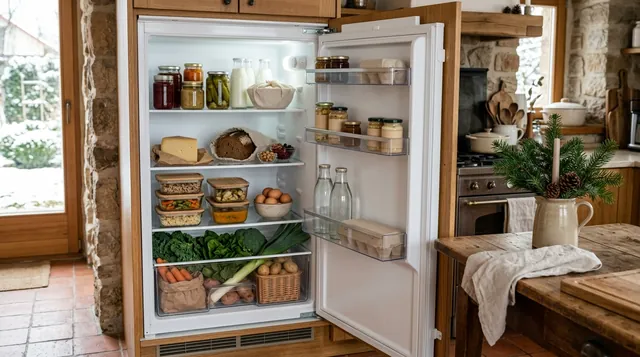
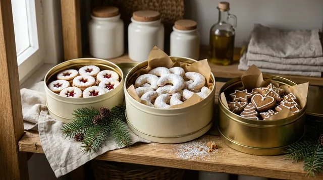
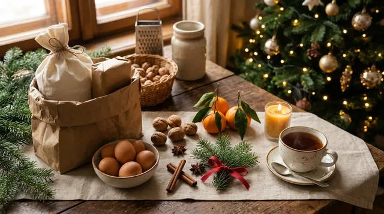

Blog
Tipy na nákupy, šetření a méně vyhazování jídla. Pravidelně nové články.
-

Jak uklidit lednici před Vánoci a udělat místo na jídlo
Jak uklidit lednici před Vánoci: co sníst a co vyhodit, jak uvolnit místo, co dát do mrazáku a na balkon a jak vše bezpečně uložit.
-

Jak ušetřit na Vánocích při nákupu jídla: praktické tipy
Jak ušetřit na Vánocích při nákupu jídla: rozpočet, menu, inventura doma, akce v letácích a nákup ve správný čas. Bez stresu a bez zbytečných zbytků.
-

Jak skladovat cukroví, aby vydrželo až do Vánoc
Jak skladovat cukroví: které druhy péct dříve, kam je uložit, které jde zamrazit a co s cukrovím s krémem, aby žádné neskončilo v koši.
-

Vánoční nákupní seznam: jak nakoupit na svátky a nevyhodit jídlo
Jak sestavit vánoční nákupní seznam, kdy co koupit a jak o svátcích neplýtvat jídlem. Postup v 6 krocích s časovým plánem nákupu.
První články připravujeme. Brzy tu budou.